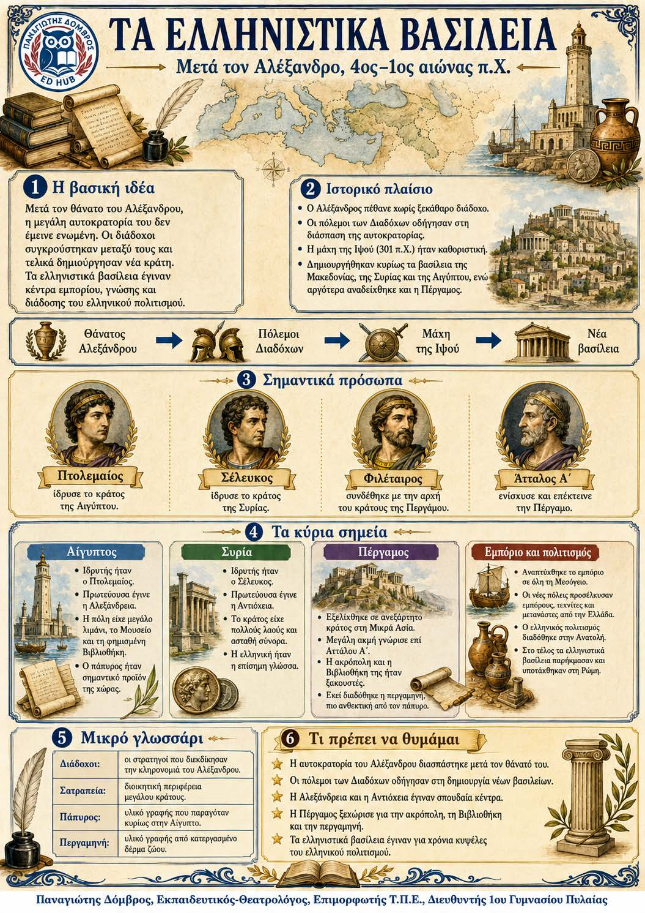

Πληροφοριογράφημα ενότητας
Το πληροφοριογράφημα αυτής της ενότητας δεν έχει ανέβει ακόμη. Οι σημειώσεις παραμένουν πλήρως διαθέσιμες.

Ανατολική Μεσόγειος και Ασία, μετά το 323 π.Χ.
Μετά τον θάνατο του Αλέξανδρου δεν υπήρχε ικανός διάδοχος. Οι στρατηγοί του συγκρούστηκαν και η μεγάλη αυτοκρατορία διασπάστηκε. Έτσι δημιουργήθηκαν ελληνιστικά βασίλεια, όπου η ελληνική γλώσσα και ο πολιτισμός συνδέθηκαν με τις παραδόσεις της Ανατολής. Οι νέες πόλεις έγιναν κέντρα διοίκησης, εμπορίου και γνώσης.
